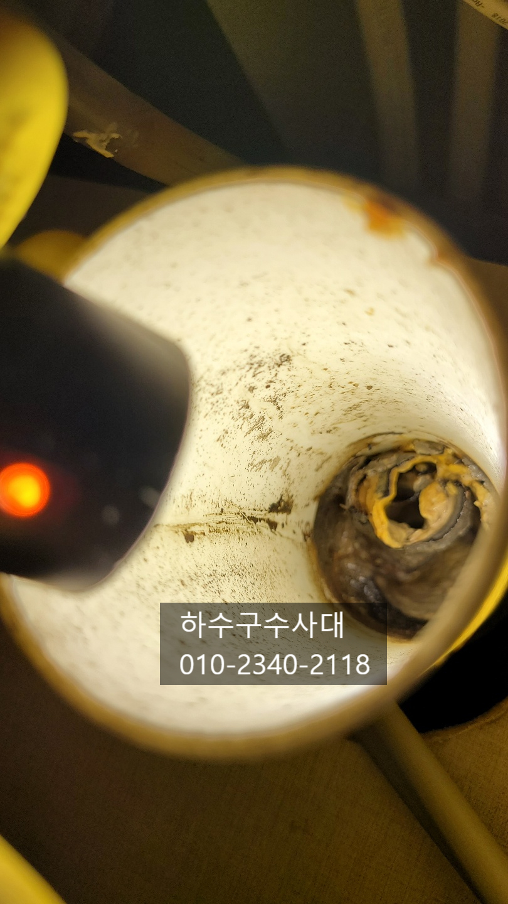
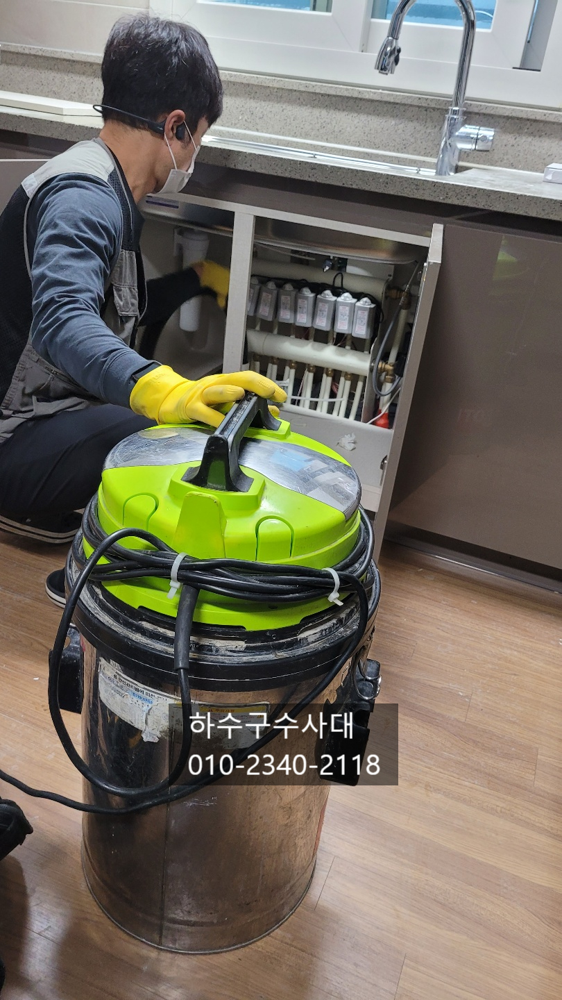
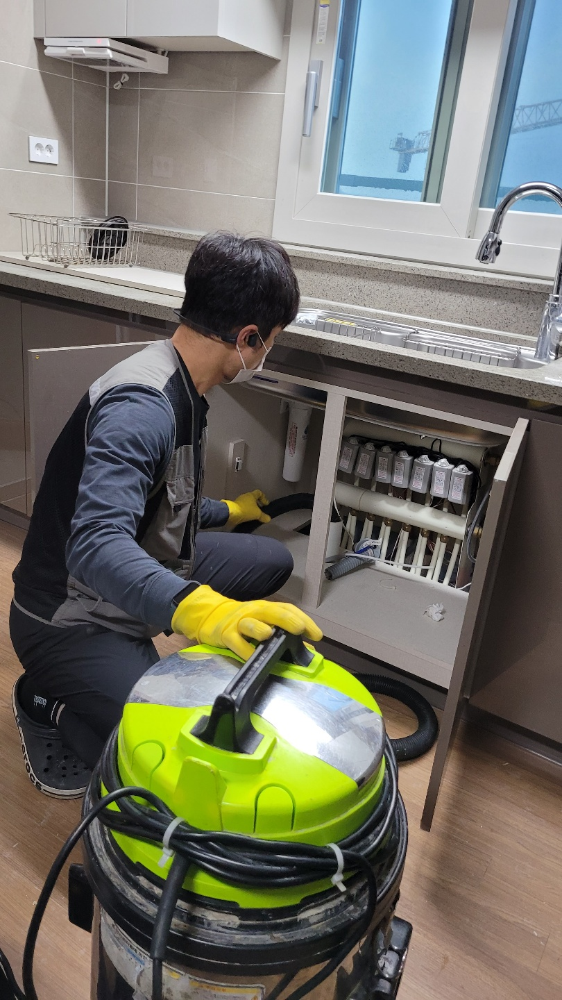
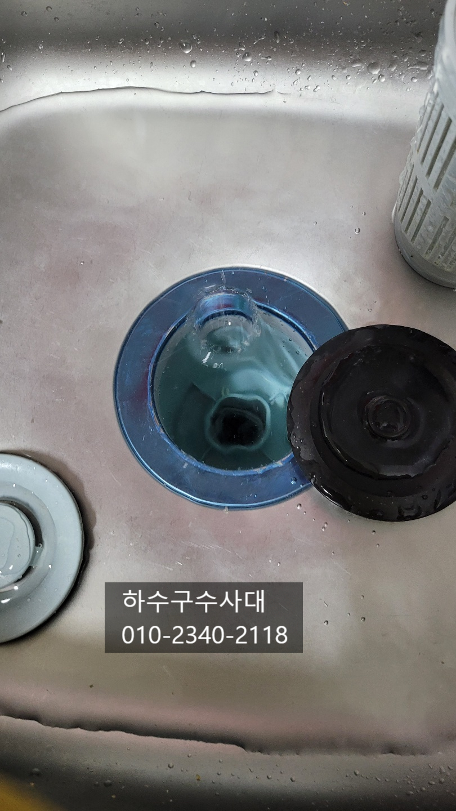
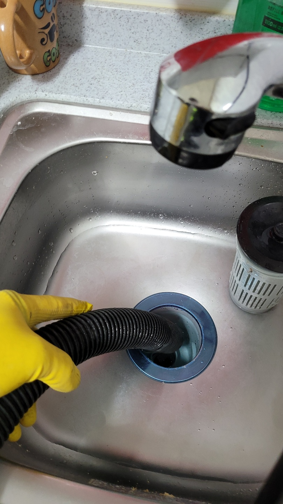
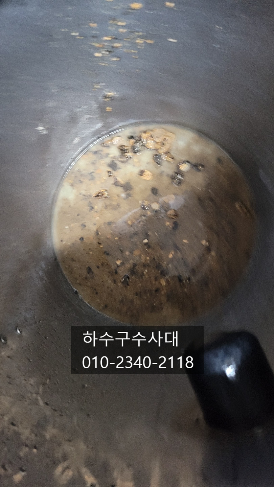
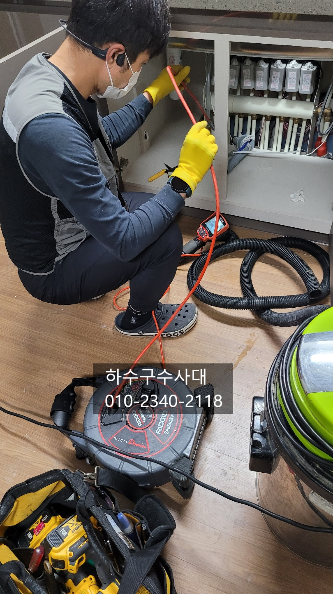

🏠 부평싱크대막힘 부개동 갈산동 삼산동 싱크대막힘
서울 갈산동 싱크대막힘 전문 시공 후기

📋 작업 개요
- 위치: 서울 갈산동, 갈산동, 서울
- 서비스 유형: 싱크대막힘, 하수구막힘, 배관막힘, 누수수리, 역류해결, 배관청소
- 작업 일시: 2021. 11. 11. 1:10
- 업체명: 하수구수사대 (010-5615-2118)
🔍 문제 상황
부평싱크대막힘 부개동 갈산동 삼산동 싱크대막힘
안녕하세요
오늘은 아파트리모델링을 한 현장을
다녀왔는데요 주방 싱크대도 바꾸면서
물을 받아 내리는 과정에서 물이 역류하는
증상으로 "하수구수사대"를 불러주셨습니다.
보통 싱크대를 새걸로 바꾸게 되면
물을 받아서 내려보는 테스트를 해주는데요
그 과정에서 배관에 이물질때문에 배관구멍이
좁아져 한번에 많은물을 소화시키지 못해
역류하는 곳이 있어요. 설거지를 하면서
역류를 한다면 바닥에 물이 넘치고
마루바닥의 경우 나무가 썩게되고 최악의 경우
밑에집에 누수로 이어질수 있기때문에
조기에 발견하는것이 중요합니다.

🔎 원인 분석
💡 전문가 진단: 하수구수사대010-2340-2118
배관입구부터 기름슬러지가 많은것이 확인이 되는데요
오랜기간 음식물이 쌓여 생긴 슬러지들 입니다.
기름을 휴지로 닦아내고 설거지를 해도 조금씩
들어가는 기름기는 어쩔수가 없는데요 가장 효과적인
방법은 주기적으로 한달에 한번이든 보름이든 펑크린같은
배관세정제를 넣어서 관리해주시는것이 좋습니다.
싱크대호스도 바꿔주시는게 좋은데요 오래되면
경화되어 부러지는 경우도 생긴답니다.
보통 아파트 리모델링을 할때 보이는 부분만 리모델링을
하는데요 욕실이나 싱크대 등 하수구부분도 점검하여
청소를 해주시는것을 추천드립니다.
예를들어 싱크대하수구배관이 막혀있는데 모르고 보이는곳만 리모델링
하고 바닥을 마루바닥으로 교체했을경우
싱크대에서 물을 쓸때마다 마루에 물이 스며들면
점점 색이 까맣게 변색되고 썩게되어 피해를 입게됩니다.

🔧 작업 과정
오늘 방문한 현장은 다행히도 입주전에 알게 되셔서
간단하게 해결할수 있었어요^^
배관의 기름기는 간단하게 석션장비로 흡입하여 뽑아주게
되는데요 간혹 딱딱하게 배관에 붙게되면 석션장비로 안되는 경우도
있답니다. 너무 오랜기간 기름이 쌓이면 돌처럼 단단해지거든요.
부평구싱크대막힘 부개동 갈산동 삼산동 싱크대막힘
기름슬러지가 굳으면 돌처럼 단단해져 덩어리가 되어
나오기도 한답니다.
간혹 아파트를 구매하시고 이사를 와서 펑크린같은
배관세정제를 넣어 더 막힘 증상이 심해지는 경우가 생기는데
이유는 배관안에 있는 일부 기름덩어리가 떨어져
막히는 경우가 있기도 합니다.
새로 이사오신분 입장에서는 억울할수 밖에 없는데요
싱크대배관은 꾸준히 관리 해주시는것이 좋은데 이처럼
배관에 기름이 많으면 관리가 쉽지 않은경우도 있답니다.
하수구수사대
010-2340-2118
기존에 있던 싱크대호스에도 기름슬러지가
많이 있었는데요 호스도 배수통도 새로 교체를
해주고 이제 꾸준히 관리만 해주시면 되겠어요^^
혹시나 하수구가 문제가 있는지 테스트를 해보는
방법인데요 물을 싱크대위에 많이 받아서
한번에 내려보면 하수구가 잘내려가는지
막혀있는지 판단할수 있습니다.


✅ 작업 완료
간혹 막혀있어 물이 많이 역류할수 있으니
물받는 양을 조절하여 테스트 해보는것도 좋습니다^^
저희 "하수구수사대"는
서울,경기,인천 전지역에서
활동중이니 하수구가 막혔을땐 언제든지
연락주세요.^^




⚠️ 베란다 누수 및 방수 관리 방법
- ✅ 비가 많이 올 때 창틀 주변이나 아래층 천장에 얼룩이 생기는지 정기적으로 확인해 보세요.
- ✅ 우수관 주변 실리콘 마감이 들뜨거나 깨진 틈새가 있는지 손상 여부를 수시로 체크하세요.
- ✅ 베란다 바닥 타일의 줄눈(메지)이 소실되면 그 틈으로 물이 침투하여 누수가 유발됩니다.
- ✅ 누수 의심 증상 발견 시 방치하면 아래층 손실이 커지므로 즉시 전문가의 진단을 받으십시오.
💡 핵심 정리
- 확실한 장비 작업(내시경 점검 및 샤프트 스케일링)으로 원인을 뿌리 뽑습니다.
- 작업 후 1년 이내에 동일한 부위 재발 시 100% 무상 A/S 서비스를 보장합니다.
- 서울 · 경기 · 인천 전 지역에 24시간 언제든 긴급 출동할 수 있도록 항시 대기 중입니다.
❓ 자주 묻는 질문 (FAQ)
🚨 서울 갈산동 싱크대막힘 문제로 고민이신가요?
정확한 원인 진단과 확실한 시공으로 재발 없는 해결을 약속드립니다.
24시간 긴급 출동 | 서울 · 경기 · 인천 전지역 | 1년 내 재발 시 무상 A/S